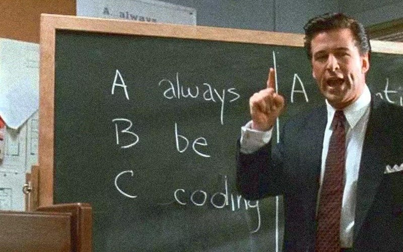
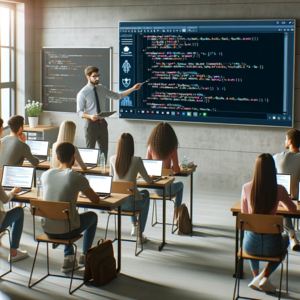
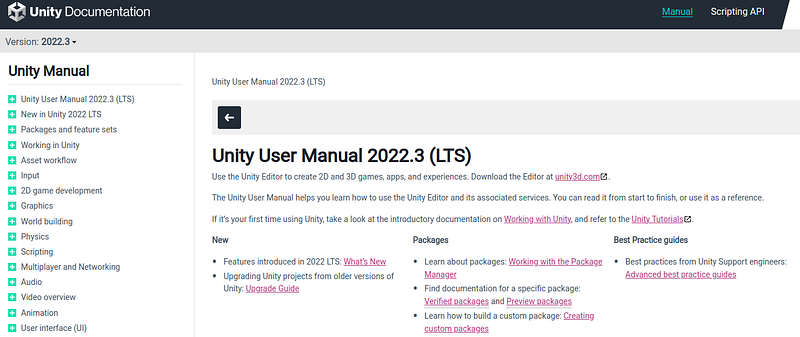

Your first concern with learning to program should be to have the right motivation.
Always showing up and grinding daily should be your motto if you really want to see results.
Managing your motivation for the long-term is the singular most important thing you can do to learn to code.
You should be coding... every day.
The truth of the matter is length of time learning is the most significant statistic in learning to program.
It takes 100s of hours of learning just to get down the basics and hundreds more to learn a language well, possible 1000s.
It is the path everyone must take.
Take it or leave it, that is how its done.
Manage your motivation
I personally find two viable long term reasons to code. One, to have fun, and two, to become a better human.
You will find as you learn to code your general proficiency with technology itself improves significantly.
You will come to understand most to all apps better and better as you learning computer science AKA programming.
Making money is not a good motivation
Perhaps only in America, learning to code for a software engineering job just is not viable anymore.
Jobs are highly gate-kept and flooded with programmers looking for a salary.
In America, even those with experience and seniority are having difficulty finding programming jobs here in 2024.
Perhaps if the market in this country changes this motivation can become viable.
At this time if you look at YouTube videos on software engineering jobs, you can look at the comments.
There are many, many, people saying they are applying at 1,500+ jobs and still not getting any software engineering work.
This is just the state of things right now.
If you live in India, China or other countries this motivation is more viable.
Often in these countries you can land a job after as little as 15 applications.
In the U.S a more sustainable reason is instead fun and self-improvement.
Your goal should be to learn over time.
More time learning = results. That is the key.
Determine your learning type
In using this time wisely, it is massively important to determine how you naturally learn.
Learning in sync with your natural style requires less motivation and can be way more sustainable.
It can make or break you as a coder.
What happens outside your style?
In the past I tried programming many times but failed to catch on even to basic code.
In my teens I was placed in front of code and asked to read it.
That failed.
I was told to simply write code, that failed.
I took some courses in college in my early twenties and of course that failed (it was a senior level class and I knew nothing of programming)
I never took a real entry level Computer science course and just assumed I sucked at coding.
At 27 I took my first actual entry level Computer Science class.
The course was an "Introduction to computing" where I was taught what a variable was, loops, conditionals and all super entry level stuff.
I knew none of that and it always seemed too hard to learn in the first place.
This college style of learning from a lecture on theory just took.
I needed to learn the basics in the theoretical style.
For the first time I was learning.
I was learning successfully in my learning style.
Ever since then I stuck to that style and never stopped.

Me, personally, I am a theoretical learner.
I can watch and read theory for a few hours and actually improve as a coder.
When I tell people my learning style, often they are surprised.
It seems strange.
I can read theoretical blogs, watch a 1 hour lecture and then suddenly I am a better coder in that topic.
If I figured that out much sooner it would have saved me a lot of hassle.
The learning styles
The only way to figure out your learning type is trying each one and seeing which works best.

For your experimentation there a few distinct learning types out there...
- Theoretical learners (me): You must understand how the magic works to be able to code.
- Readers: Everything has to be in written form
- Watchers: You need visualization and code alongs
- Coders: You can only code, but you are damn good
- Documentation geeks: You can read documentation like a boss
Try each one and see what takes.
If you are beginner watch a Computer Science fundamentals course:
Introduction to Programming and Computer Science - Full Course
It might take, it might not take.
If you are a theoretical learner like me, courses like these and Udemy are KING.
I can listen to 8 hours on how a framework functions in the background then actually code that framework.
But I cant look at code and figure it out nowhere near as easily.
If you are a coder type you will find you can literally glance at code and your eyeballs just naturally understand.
If you are a reader type you can take any blog, like mine, and learn at ultra speeds.
Readers would be great at the Head First series on Amazon.
If you are a watcher you will love code alongs and tutorial explanations. Some people thrive on code alongs, not a bad thing and not a myth.
Documentation geeks are amazing. They can look at a manual and just naturally take on the code.
Other coders are often jealous of documentation geeks just for the fact documentation is usually the most up to date with a language/framework.
Documentation geeks often are not theoretical learners yet understand and write code from the official coding manual.
Pretty bonkers.
The more you learn in one style, the better
You should learn your strength and exploit it, for sure.
But, all these learning styles are useful.
The more you learn in one style, the better you get at that style.
Over time as you read documentation, your ability to understand docs just improves.
Same with theory and the coder style.
The mind just naturally adapts to the style, being itself plastic.
Learn the fundamentals
While managing your motivation and determining your learning style the order of learning to code should be
- Programming fundamentals and IDE (As much as you can)
- One language (For as long as you can)
- And lastly, a niche
For programming fundamentals I have created blogs on several learning styles.
First, for the theoretical learner I recommend reading: Why Coding Fundamentals Are Important & Questions You Should Be Asking
Second, for the pure code learner I recommend: Unlock Your Potential With 5 Ways To Study Programming Without Tutorials or Courses
And lastly for the video watcher I recommend: Do Full Courses Really Help You Become a Great Coder?
Each says the same thing but in different styles.
Each of these are viable ways to learn the programming fundamentals.
Learn the fundamentals and stick to one language and one niche.
Anywho, I hope you learned something...
CTA: Check out my other articles and, if you feel like it, sponsor me on GitHub: https://github.com/sponsors/JesseGuerrero
Happy coding!
Resources
Theoretical learners: Why Coding Fundamentals Are Important & Questions You Should Be Asking
Code learners: Unlock Your Potential With 5 Ways To Study Programming Without Tutorials or Courses
Video learners: Do Full Courses Really Help You Become a Great Coder?